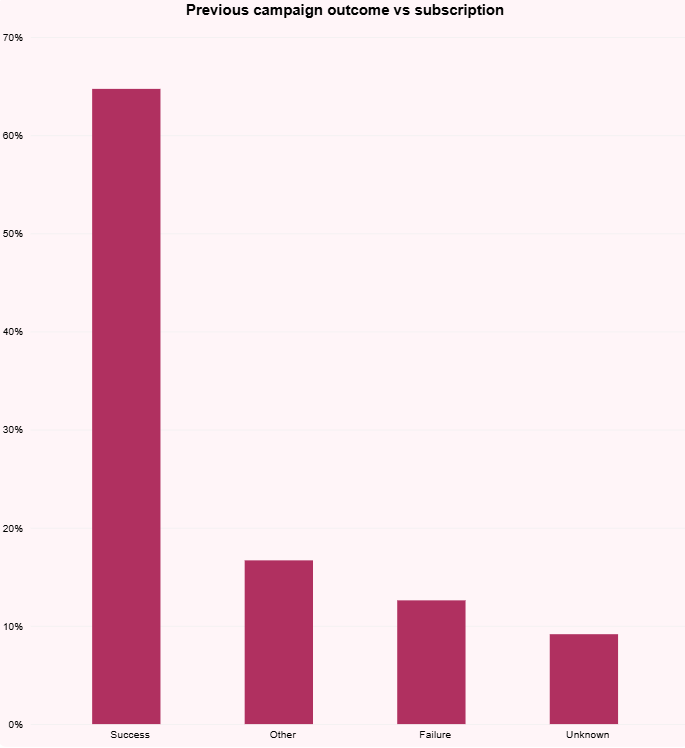
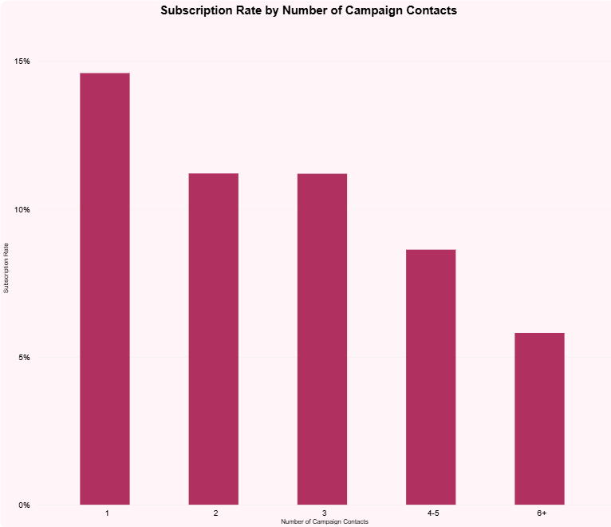
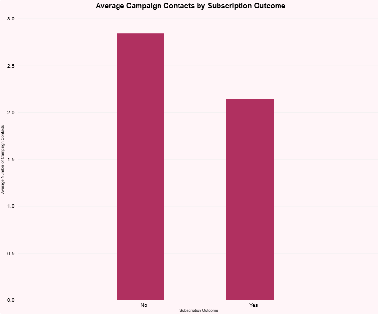
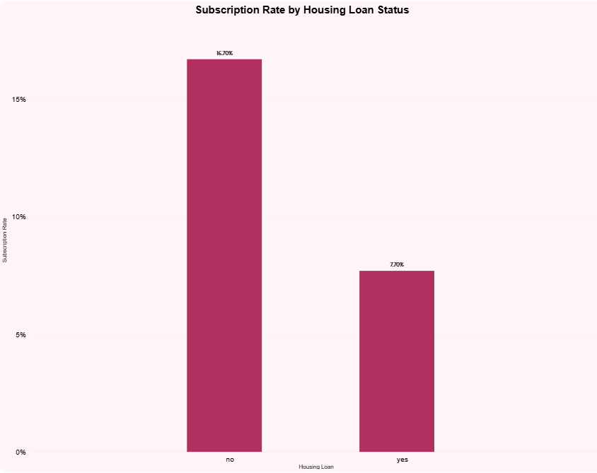
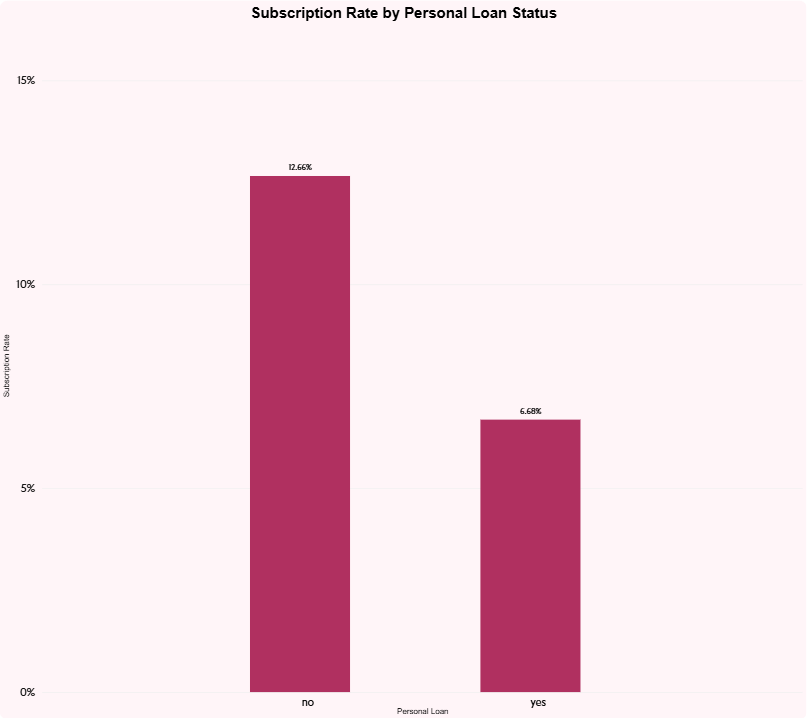
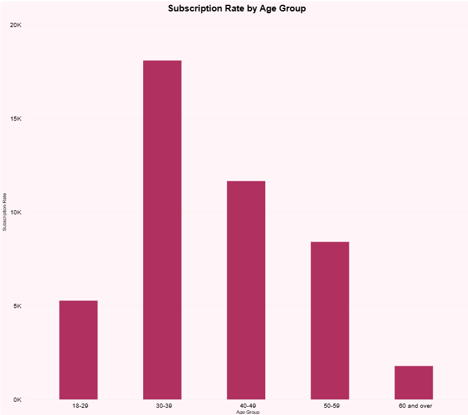
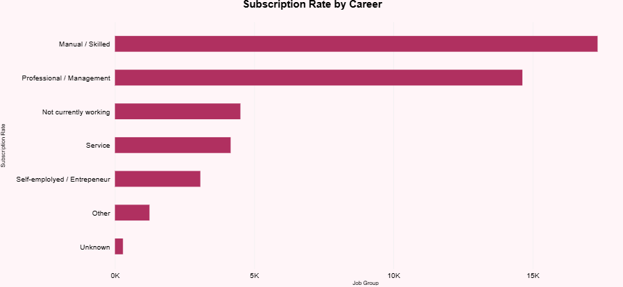

Project Overview
This project uses a publicly available bank marketing dataset to investigate customer characteristics, marketing activity and customer subscription to a term deposit.
The dataset contains 45,211 rows and 17 columns. The target variable, y, records whether a customer subscribed to a term deposit as yes or no.
This dataset was selected due to its relevance in the banking sector. This provided an opportunity to explore a familiar industry context while applying data science techniques to a public dataset.
Research Question
Which customer and campaign characteristics are associated with whether a customer subscribes to a term deposit following a bank marketing campaign?
Project Process
A structured process was followed to take the project from the original data to the final findings.
- Raw Public Data
- Data Quality and Preparation
- Analyse and Model
- Visualise
- Explain Findings
01. Raw Public Data
The original dataset was reviewed to understand its structure and variables.
View Original Dataset02. Data Quality and Preparation
Before carrying out the analysis, the dataset was reviewed to understand the structure and identify any data quality issues that could affect the results. This involved checking for missing values, duplicate records, and unusual values.
| Data Quality Check | What I Checked | Outcome |
|---|---|---|
| Missing Values | Checked the dataset for blank or null values. | There were no null or blank values found. However, four categorical columns contain unknown values, which represent unavailable information rather than empty cells. |
| Duplicate Records | Checked for duplicate records that could affect the analysis. | No duplicate rows were found so the full 45.211 record were retained. |
| Data Types | Checked that numerical and categorical fields had appropriate data types. | The dataset contained seven numerical fields and ten categorical fields. |
| Unknown Values | Reviewed fields containing the value "unknown". | "unknown" occured in job 288 times, education 1,857 times, contact 13,020 times, and poutcome 36,959 times. These were retained as separate categories rather than removed. |
| pdays = -1 | Investigated the meaning of -1 before deciding how to treat it. | The value of -1 occured in 36,954 records. Every one of these records also had previous = 0, confirming that the customer had not previously been contacted. Therefore -1 is meaningul and was kept as a result. |
03. Analyse and Model
This section will explore patterns and relationships between customer characteristics, campaign characteristics and the subscription outcome.
04. Visualise
A range of visualisations were created in Power BI to explore the relationships between customer characteristics, campaign activity and term deposit subscription.

Figure 1: Subscription rate by previous campaign outcome

Figure 2: Subscription rate by number of campaign contacts

Figure 3: Average campaign contacts by subscription outcome

Figure 4: Subscription rate by housing loan status

Figure 5: Subscription rate by personal loan status

Figure 6: Subscription rate by age group

Figure 7: Subscription rate by career
05. Explain Findings
This section will explain the key findings and how they relate to the research question.
Reflection
This section will reflect on learnings, the limitations of the project and what could be improved in future.